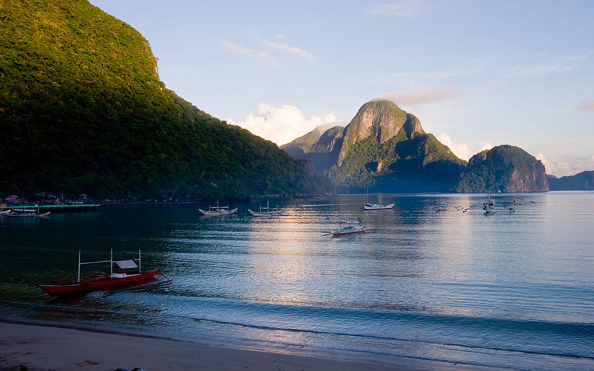
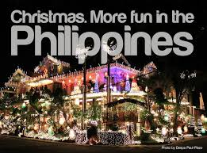

To make it more in tune with the government’s campaign for change in the country, the Department of Tourism will come up with a new slogan next year to replace the current theme, “It’s More Fun in the Philippines.” Tourism Secretary Wanda Teo said yesterday her office is now working with several advertising companies to conceptualize the new catchphrase that should have something to do with President Duterte’s “change” theme.
The government has been using the slogan “It’s More Fun in the Philippines” since it was introduced in 2012. Teo said the new catchphrase would most likely be launched in mid-2017 and not immediately after the country hosts the Miss Universe pageant in January.
“We have a new Philippines. So, the slogan will focus more on ‘change’,” she added.
Tourism in the Philippines
Tourism is an important sector for the Philippine economy. In 2015, the travel and tourism industry contributed 10.6% to the country's GDP.The Philippines is an archipelagic country composed of 7,107 islands with 82 provinces divided in 18 regions. The country is known for having its rich biodiversity as its main tourist attraction. Its beaches, mountains, rainforests, islands and diving spots are among the country's most popular tourist destinations. The country's rich historical and cultural heritage are also one of the attractions of the Philippines. Popular destinations among tourists are El Nido in Palawan, Davao, Boracay, Siargao, Cebu, Manila and many more.
As of 2015, 4.99 million Filipinos have been employed in the tourism sector and the government collected P227.62 billion pesos from foreign tourists. The country attracted a total of 5,360,682 foreign visitors in 2015. While most parts of the Philippines archipelago are relatively safe to visit, and the local Filipinos are known for their friendliness, the southern areas where terrorist cells — such as Abu Sayyaf, are active and at large are best avoided. This terrorist group is notorious on targeting foreign nationals in numbers of attacks, piracies, kidnappings and killings, making terrorism as the most troubling issues plaguing Philippines' tourism sector.
Tourism in the Philippines traces its origins during the ancient times when the first set of people chose to migrate through land bridges, followed by the second set of migrants from Indonesia, then the last migrants from Borneo Islands. All of those created their own kingdoms and tribes within the archipelago. Trade also became part of the tourism as Arabs, Indians and Chinese traded products and goods to the natives. When the islands became part of the territory of Spain, an influx of Spanish people migrated, (though still few compared to the ones migrated in South America due to distance of the country.)
Reasons Why It Is More Fun In The Philippines
The Philippines has a diverse culture. From colorful festivals to historical landmarks, the Philippines showcases a mix of Malayo-Polynesian and Hispanic influences in their culture. Every region or province has its own tradition and special delicacy. The country has 171 native languages, showing the diversity of its people and culture.
World-class beaches are found in the Philippines. The pristine white sand of Boracay, the crystal blue seas of Pagudpud, the divers’ haven of Panglao, the clear turquoise waters of Pearl Farm Beach, and breathtaking seascapes of El Nido are just some of the beaches you need to visit in the Philippines.
Filipinos are hospitable. You’ll receive the warmest welcome from any Filipino household. Whether you’re going to a tourist destination or simply going around the metro, Filipinos will accommodate you in the most congenial way. They will offer you the best of what they have to make you feel at ease in their company.
The Philippines is the country for every shopper. You’ll find quality items at affordable prices in the Philippines. Shopping is one of the favorite past times of Filipinos. Bazaars are big in the metro and mall-wide sale is prominent. From signature bags and clothes to locally-made ensembles, you’ll definitely find both trendy and quaint items in your shopping spree.